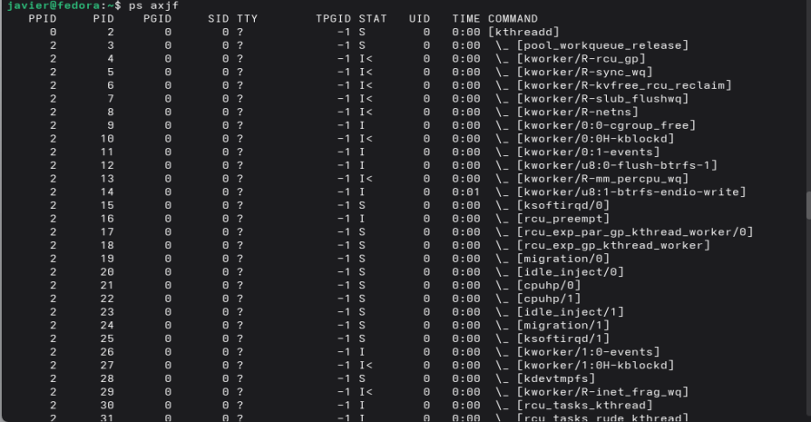
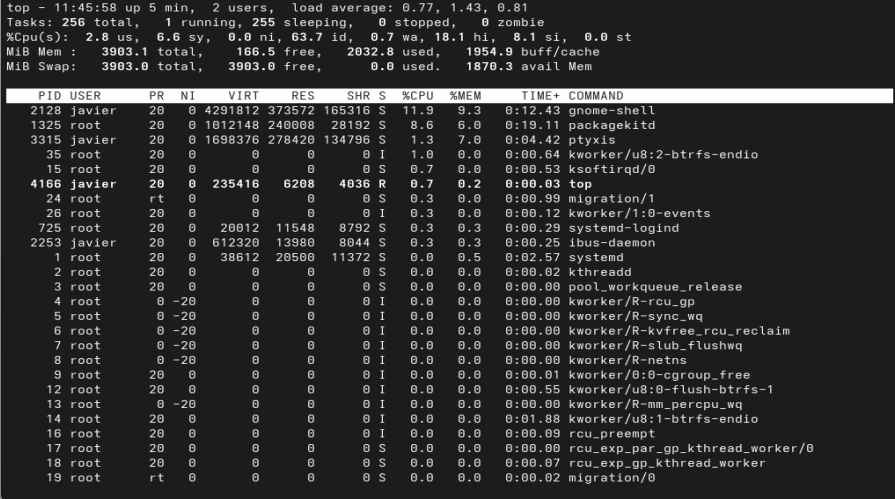
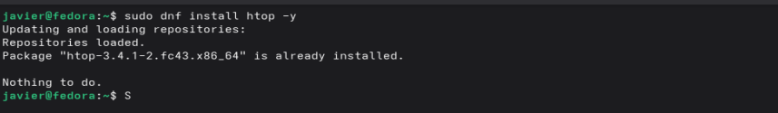
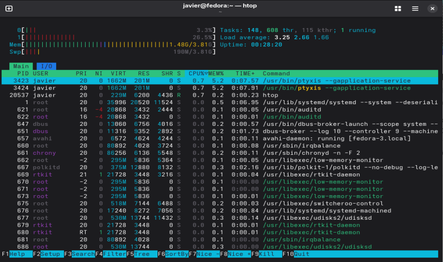
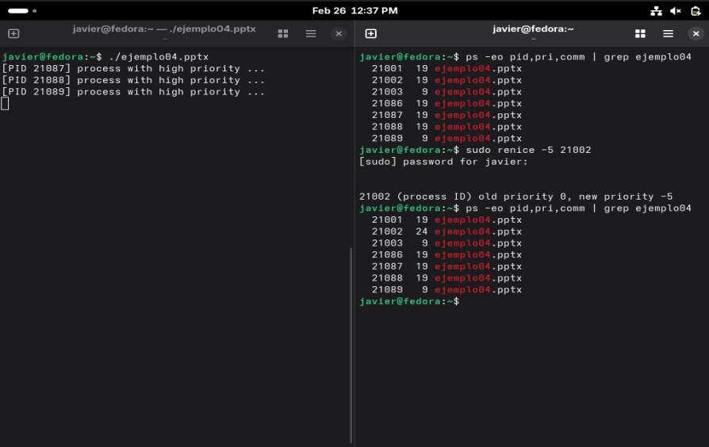

Procesos en Linux
1. Objetivos
Objetivo General
Introducción a proceso en Linux, como ver htop y cambiar la prioridad de estos
Objetivos Específicos
- Uso de top.
- Añadir repositorio externo a dnf.
- Instalar htop y diferencias con top.
- Comando nice y el cambio de prioridad.
- Uso de pkill para matar varios procesos.
2. Investigación y Marco Conceptual
En Linux, las señales son un mecanismo de comunicación asíncrona entre el kernel y los procesos. Estas permiten notificar a un proceso sobre eventos como interrupciones del usuario, errores o solicitudes de terminación.
Procesos
Un proceso es una instancia en ejecución de un programa. Cada proceso tiene su propio espacio de memoria, recursos asignados y un identificador único llamado PID (Process ID).
A diferencia de un programa, que es solo un archivo almacenado en disco, un proceso representa al programa en ejecución dentro del sistema operativo.
Un proceso puede pasar por varios estados
- RUNNING: El proceso se está ejecutando en la CPU.
- READY: El proceso está listo para ejecutarse.
- WAITING: El proceso espera un evento (E/S, señal).
- STOPPED: El proceso fue detenido manualmente.
- PAUSED: El proceso se encuentra temporalmente suspendido.
Un proceso se divide en distintos segmentos de memoria:
- Text Segment: Contiene el código en lenguaje máquina.
- Data Segment: Variables globales inicializadas.
- BSS: Variables globales no inicializadas.
- Heap: Memoria dinámica reservada en tiempo de ejecución.
- Stack: Pila de ejecución (funciones y variables locales).
Procesos padre e hijo
Dentro de Linuz exite lo que son los proceso padres e hijos. Un proceso padre es el proceso original que crea otro proceso, y un proceso hijo es la copia que nace a partir de él.
Esto ocurre mediante la llamada fork(). Cuando se ejecuta, el sistema duplica el proceso. Ambos continúan desde el mismo punto del programa, pero fork() e devuelve valores distintos para diferenciarlos: el padre recibe el PID del hijo y el hijo recibe 0.
Htop y Top
El comando top es una herramienta fundamental en sistemas Linux para la supervisión en tiempo real del rendimiento del sistema. Permite visualizar información dinámica sobre el uso del CPU, la memoria y el estado de los procesos activos, ordenados generalmente por consumo de recursos. Su uso facilita la identificación de procesos que impactan el desempeño del sistema, apoyando tareas de diagnóstico, administración y optimización de recursos en entornos informáticos.
De igual manera htop es una herramienta interactiva para monitorear procesos
en tiempo real. Permite visualizar el consumo de CPU, memoria,
jerarquía de procesos y modificar prioridades directamente.
Para instalar htop en sistemas basados en Fedora se requiere
habilitar un repositorio externo.
Prioridad y el comando nice
La prioridad de un proceso se controla mediante el valor NI (Nice). Valores más bajos indican mayor prioridad.
- PRI: Prioridad real del proceso.
- NI: Ajuste de prioridad (nice).
- UID: Identificador del usuario propietario.
| Comando | Descripción |
|---|---|
ps -ef |
Muestra todos los procesos del sistema. |
ps -ef --sort=-%mem |
Ordena los procesos por consumo de memoria. |
ps axjf |
Muestra los procesos en forma jerárquica. |
man ps |
Manual del comando ps. |
htop |
Monitor interactivo de procesos. |
/etc/yum.repos.d/ |
Directorio de repositorios del sistema. |
sudo dnf install epel-release |
Instala el repositorio EPEL. |
3. Desarrollo Técnico
Paso 1. Revisar procesos
Dentro de Linux se vieron dos formas de ver todos los proceso dentro del sistema.
El comando ps se encarga de mostrar todos los procesos actuales del sistema. Este puede recibir diferentes banderas para mostrar diferentes resultados. En la Figura 1. se puede ver los procesos siendo acomodados por padre-hijo al usar las banderas ps exjf
Paso 2. Comando top vs htop
Hay una mejor forma de ver los procesos en tiempo real, con el comando top. Esto permite monitorea el sistema y ver como los procesos cambian Figura 2. Pero incluso asi tiene una interfaaz con informacion necesaria de manera atractiva.
Para eso se utiliza el htop es un programa con mejor rendimiento y mas funcionalidades. Poder utilizarlo dentro de Linux se debe instalar con el comando dnf como se puede ver en la Figura 3. Una vez instalado se puede ver en la Figura 4, toda la informacion con mas detalle y mas sencillo de identificar.
Paso 3. Procesos padre y fork()
En los sistemas tipo Unix, fork() es la llamada que hace posible la multitarea real. Cuando un programa ejecuta fork(), no se divide: se duplica. El sistema operativo crea un proceso hijo, que es casi una copia exacta del proceso padre. Ambos continúan ejecutándose desde el mismo punto del código, pero con identidades distintas.
Para ver esto en practica se creo un programa en c que crea tres procesos hijo usando fork(), cada uno con una prioridad distinta, mientras el proceso padre permanece activo. Tras cada fork(), el proceso hijo ajusta su prioridad con nice() (alta, normal y baja respectivamente), imprime su PID y entra en un bucle infinito para mantenerse en ejecución. El proceso padre, después de crear todos los hijos, muestra un mensaje y también queda en un bucle infinito, permitiendo observar con comandos como ps cómo el sistema planifica procesos según su prioridad.
Su ejecucion se puede ver en la Figura 5.
Paso 4. Comando renice, prioridad y comando pkill
Se utilizo el comando nice para cambiar la priordad de uno de los hijos de programa en c y luego se detuvieron todos los procesos con pkill.
Dentro de la practica yo cometi un error al matar al padre directamente y deje a los procesos hijo huerfanos. Con el comando pkill me permite matar a todos los procesos que tengan el mismo nombre.
4. Evidencia de Ejecución
Durante la ejecución del programa, se enviaron distintas señales utilizando el comando





5. Conclusiones y Trabajo Futuro
El manejo de procesos es fundamental en un sistema operativo. Herramientas como htop permiten visualizar y administrar recursos de forma eficiente, mientras que nice y renice ofrecen control sobre la prioridad de ejecución.
Trabajo Futuro: Implementar temporizadores con alarm(),
comparar el manejo de señales en Linux contra Windows y desarrollar un handler en BASH.
6. Bibliografía
Reporte generado con ayuda de ChatGPT